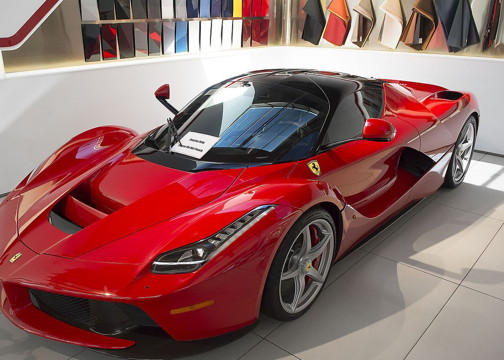

Компанія Ferrari була заснована у 1939 році Енцо Феррарі в Маранелло, Італія. Спочатку Ferrari почала свою діяльність як спортивна команда під назвою Scuderia Ferrari, яка виступала на автомобілях Alfa Romeo. Перший автомобіль під брендом Ferrari, 125 S, з'явився у 1947 році. Цей автомобіль, оснащений 1.5-літровим V12 двигуном, став символом нової епохи в автомобільній індустрії.Ferrari завжди була на передовій інновацій. Компанія першою застосувала багато технологій, які пізніше стали стандартом для спортивних автомобілів. Зокрема, Ferrari активно розвиває аеродинаміку, використовуючи комп'ютерне моделювання і тести в аеродинамічних трубах. Крім того, Ferrari впровадила у свої автомобілі технології з автоспорту, такі як системи контролю тяги, адаптивні підвіски та вдосконалені гальмівні системи.
Ferrari була заснована у 1939 році Енцо Феррарі в Маранелло, Італія, як гоночна команда Scuderia Ferrari, яка підтримувала автомобілі Alfa Romeo. Перший автомобіль Ferrari, модель 125 S, з'явився у 1947 році з 1,5-літровим двигуном V12 від Джоаккіно Коломбо, швидко здобувши популярність завдяки гоночним успіхам. У 1950-х роках Ferrari отримала міжнародне визнання завдяки перемогам у гонках, зокрема з моделлю 250 GTO, і досягала успіхів у Формулі-1. У 1960-х роках компанія виграла численні перегони, включаючи 24 години Ле-Мана, з моделлю 330 P4. У 1970-1980-х роках Ferrari впровадила турбонаддув і випустила моделі 308 GTB та Testarossa, домінуючи у Формулі-1 з пілотами Нікі Лаудою та Жилем Вільньовом. У 1990-х з'явилися нові технології, такі як електронні системи управління двигуном, з моделлю F50 як символом епохи. На початку 2000-х Ferrari домінувала у Формулі-1 з Міхаелем Шумахером, вигравши п'ять чемпіонатів поспіль. Модель Enzo, випущена у 2002 році, стала технологічним шедевром. Сьогодні Ferrari випускає розкішні автомобілі, такі як SF90 Stradale та Roma, впроваджуючи гібридні та електричні технології, зберігаючи цінності бренду.
LaFerrari — гібридний спортивний автомобіль, представлений Ferrari у 2013 році. Він є одним з найпотужніших творінь марки, що втілює останні досягнення в інженерії та дизайні. Оснащений 6,3-літровим двигуном V12 (800 к.с.) і електродвигуном (163 к.с.), LaFerrari має загальну потужність 963 кінських сили. Автомобіль розганяється від 0 до 100 км/год за менше ніж 3 секунди, а максимальна швидкість перевищує 350 км/год. LaFerrari використовує гібридну технологію HY-KERS, що підвищує ефективність енерговикористання та знижує викиди. Високотехнологічні матеріали, такі як карбон і алюміній, забезпечують легкість і міцність конструкції. Дизайн поєднує аеродинамічні форми з елегантними лініями, а інтер'єр вирізняється високоякісними матеріалами і передовими технологіями для комфорту водія. Випущений обмеженим тиражем у 499 екземплярів, LaFerrari став бажаним серед


LaFerrari почалася на початку 2010-х років, коли Ferrari вирішила розробити автомобіль, який продемонструє майбутнє автомобільної інженерії. Команда інженерів та дизайнерів Ferrari, очолювана головним інженером Роберто Феделі, розпочала роботу над проектом, який отримав кодову назву F150. В основу LaFerrari поклали ідею гібридного приводу. Для цього було використано 6,3-літровий двигун V12, розроблений спеціально для цієї моделі, у поєднанні з електродвигуном, що працює за технологією HY-KERS (Hybrid Kinetic Energy Recovery System). Ця система дозволяє не тільки збільшити загальну потужність автомобіля до 963 кінських сил, але й ефективно використовувати енергію гальмування, перетворюючи її на електроенергію.